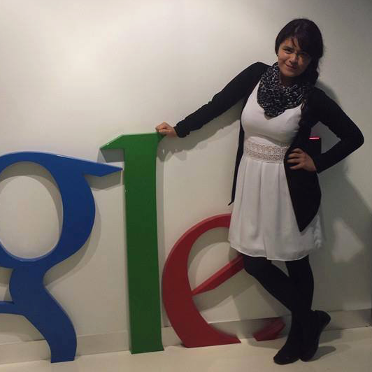

Teléfono
(55) 5424-0620
Teléfono
(55) 5424-0620
Instructores
Andrea Díaz G. AllardPerfil de Linked-In |
Especialista en atender y darle prioridad a las necesidades del cliente, darles seguimiento y hacer que las cosas sucedan para su crecimiento. Tiene una certificación en google adwords ayudándole al desempeño y realización de crecimiento de clientes dentro del mercado de marketing digital. |

Tanya MoralesPerfil de Linked-In |
Especialista en Analytics web y Social Analytics, en Abaco Metrics trabaja en el área de Branding para un mejor desempeño en la comunicación entre el usuario y marca. Lic. en Ciencias de la Comunicación, con una especialidad en Comunicación Digital y Social Media, cuenta con una Certificación en Google Analytics y Google Adwords. |
Brenda TorizPerfil de Linked-In |
Lic. en Mecadotencia, con experiencia en Marketing Digital enfocada al seguimiento y solución de las prioridades de cada uno de los clientes. Forma parte de Ábaco Digital en el equipo de Branding y cuenta con una certificación en Google Adwords. |
Diane Axelle PonsPerfil de Linked-In |
Licenciada en Economía por el ITESM CCM con enfoque en análisis estadístico digital, certificada en Google Analytics Individual Qualification. Cuenta con experiencia en consultoría y análisis de iniciativas online con el objetivo de optimizar los recursos invertidos en campañas digitales e incrementar el impacto de cada negocio. |
Alberto MirandaPerfil de Linked-In |
Ha participado en las estrategias digitales de Volaris, Segundamano y American Express Corporate. Caso de éxito en Volaris por los resultados obtenidos mediante la Red de Display de Google y es parte de la primera generación de Google Champions a nivel Latinoamérica |
Julio A. JiménezPerfil de Linked-In |
Es especialista en Marketing Digital, con amplia experiencia en Digital Advertising en diversas industrias como la Financiera, Educativa, Salud y Telecomunicaciones. Ing. en comunicación multimedia, con una especialidad en Marketing Interactivo por parte del ITESM. Como parte de Ábaco, conformó el primer equipo en generar una estrategia B2B Digital para la industria financiera. |
Daniela Rendón |
Cuenta con experiencia en creación, medición y optimización de campañas publicitarias en medios digitales. Titulada con Mención Honorífica después de haber cursado un semestre en la Universidad de Buenos Aires, Argentina, en el periodo comprendido entre marzo del 2014 a agosto del 2014. |

Emmanuelle PaulinPerfil de Linked-In |
Cuenta con más de 11 años de experiencia para start-ups e integrando areas para agencias tradicionales, BTL y digitales. Tiene una maestría en dirección estratégica de Marcas y Publicidad y contribuye en la industria digital y de innovación de México tal como en IAB y Hackatones. |
Mónica ElíasPerfil de Linked-In |
Directora General de Ábaco Digital, con más de 9 años desarrollando estrategias digitales y modelos de medición enfocados principalmente en lead generation & e-commerce. Ha colaborado en programas de capacitación ad-hoc a nivel empresarial sobre el uso efectivo de Google Adwords y Google Analytics. |
Certificaciones de los instructores